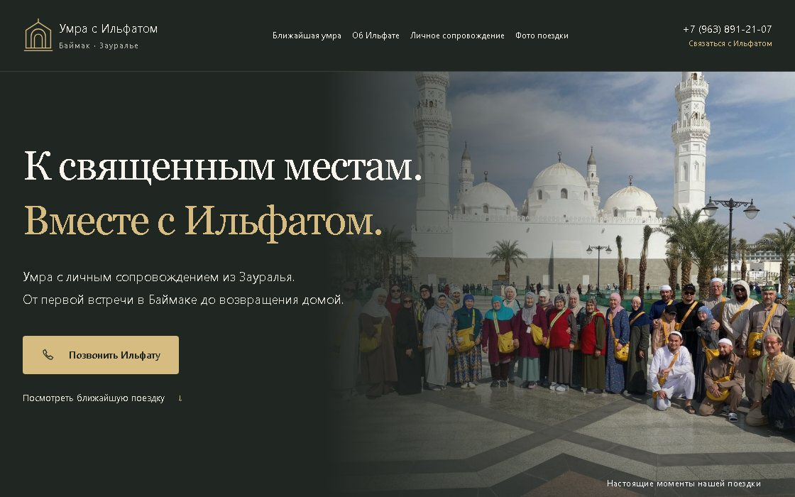

Паломнические поездки · 2026
Умра с Ильфатом
Групповая поездка в Мекку и Медину с личным сопровождением из Зауралья.

Задача
Дать паломнику ответы на первые вопросы о поездке и познакомить с человеком, который будет рядом.
Что я сделал
На одной странице собрал маршрут, условия ближайшей поездки, рассказ об Ильфате и фотографии с паломничества.
Результат
До звонка организатору человек может посмотреть даты, место вылета и условия проживания, а затем уточнить детали у самого Ильфата.